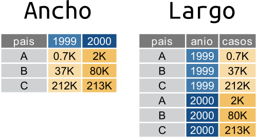

Manipulación de datos ordenados usando {dplyr} y {tidyr} II
Un mismo conjunto de datos puede estar en un formato “ancho” o “largo”. Los datos en formato “largo” o “tidy”, son aquellos en los cuales:
- cada fila es una observación
- cada columna es una variable
En el formato “ancho” es un poco más complejo de definirlo pero la idea general es que:
- cada fila es un “ítem”
- cada columna es una variable

Una tabla en formato largo va a tener una cierta cantidad de columnas que cumplen el rol de identificadores y cuya combinación identifican una única observación y una única columna con el valor de la observación. En el ejemplo de arriba, pais y anio son las columnas identificadoras y casos es la columna que contiene el valor de las observaciones.
En una tabla ancha, cada observación única se identifica a partir de la intersección de filas y columnas. En el ejemplo, los países están en las filas y los años en las columnas.
En general, el formato ancho es más compacto y legible por humanos mientras que el largo es más fácil de manejar con la computadora. Si te fijás en las tablas de arriba, es más fácil comparar los valores entre países y entre años en la tabla ancha. Pero el nombre de las columnas (“1999”, “2000”) en realidad ¡son datos! Además este formato se empieza a complicar en cuanto hay más de dos identificadores.
Un mismo set de datos puede ser representado de forma completamente “larga”, completamente “ancha” o –lo que es más común– en un formato intermedio pero no existe una forma “correcta” de organizar los datos; cada una tiene sus ventajas y desventajas. Por esto es que es muy normal que durante un análisis los datos vayan y vuelvan entre distintos formatos dependiendo de los métodos estadísticos que se le aplican. Entonces, aprender a transformar datos anchos en largos y viceversa es un habilidad muy útil.
Desafío
En las tablas de ejemplo cada país tiene el un valor observado de “casos” para cada año. ¿Cómo agregarías una nueva variable con información sobre “precios”? Dibujá un esquema en papel y lápiz en formato ancho y uno en formato largo. ¿En qué formato es más “natural” esa extensión?
En esta sección vas a usar el paquete {tidyr} para manipular datos. Si no lo tenés instalado, instalalo con el comando:
Y luego cargá {tidyr} y {dplyr} (que usaste en una sección anterior) con:
De ancho a largo con pivot_longer()
En secciones anteriores usaste datos de una estación meteorológica en Bariloche:
##
## ── Column specification ────────────────────────────────────────────────────────
## cols(
## .default = col_logical(),
## Fecha = col_datetime(format = ""),
## Temperatura_Abrigo_150cm = col_double(),
## Temperatura_Abrigo_150cm_Maxima = col_double(),
## Temperatura_Abrigo_150cm_Minima = col_double(),
## Temperatura_Suelo_10cm_Media = col_double(),
## Precipitacion_Pluviometrica = col_double(),
## Precipitacion_Cronologica = col_double(),
## Precipitacion_Maxima_30minutos = col_double(),
## Tesion_Vapor_Media = col_double(),
## Humedad_Media = col_double(),
## Humedad_Media_8_14_20 = col_double(),
## Rocio_Medio = col_double(),
## Direccion_Viento_200cm = col_character(),
## Direccion_Viento_1000cm = col_character(),
## Horas_Frio = col_double(),
## Unidades_Frio = col_double(),
## mes = col_character()
## )
## ℹ Use `spec()` for the full column specifications.## # A tibble: 3,024 x 31
## Fecha Temperatura_Abr… Temperatura_Abr… Temperatura_Abr…
## <dttm> <dbl> <dbl> <dbl>
## 1 2011-05-28 00:00:00 NA NA NA
## 2 2011-05-29 00:00:00 4.27 12.8 -1.2
## 3 2011-05-30 00:00:00 1.69 9.2 -2.8
## 4 2011-05-31 00:00:00 3.47 9.6 0.5
## 5 2011-06-01 00:00:00 2.90 9.6 -1.5
## 6 2011-06-02 00:00:00 6.26 13.3 2.9
## 7 2011-06-03 00:00:00 3.45 12.6 -1.8
## 8 2011-06-04 00:00:00 6.09 10.2 3.9
## 9 2011-06-05 00:00:00 5.00 7.1 3.4
## 10 2011-06-06 00:00:00 5.45 9.5 3.2
## # … with 3,014 more rows, and 27 more variables:
## # Temperatura_Intemperie_5cm_Minima <lgl>,
## # Temperatura_Intemperie_50cm_Minima <lgl>,
## # Temperatura_Suelo_5cm_Media <lgl>, Temperatura_Suelo_10cm_Media <dbl>,
## # Temperatura_Inte_5cm <lgl>, Temperatura_Intemperie_150cm_Minima <lgl>,
## # Humedad_Suelo <lgl>, Precipitacion_Pluviometrica <dbl>,
## # Precipitacion_Cronologica <dbl>, Precipitacion_Maxima_30minutos <dbl>,
## # Heliofania_Efectiva <lgl>, Heliofania_Relativa <lgl>,
## # Tesion_Vapor_Media <dbl>, Humedad_Media <dbl>, Humedad_Media_8_14_20 <dbl>,
## # Rocio_Medio <dbl>, Duracion_Follaje_Mojado <lgl>,
## # Velocidad_Viento_200cm_Media <lgl>, Direccion_Viento_200cm <chr>,
## # Velocidad_Viento_1000cm_Media <lgl>, Direccion_Viento_1000cm <chr>,
## # Velocidad_Viento_Maxima <lgl>, Presion_Media <lgl>, Radiacion_Global <lgl>,
## # Horas_Frio <dbl>, Unidades_Frio <dbl>, mes <chr>¿Notaste que en el código anterior no usaste library(readr) para cargar el paquete y luego leer? Con la notación paquete::funcion() podés acceder a las funciones de un paquete sin tener que cargarlo. Es una buena forma de no tener que cargar un montón de paquetes innecesarios si vas a correr una única función de un paquete pocas veces.
¿Cómo harías para calcular el valor medio mensual de cada variable relacionada con la temperatura? En el formato en el que están ahora los datos, tendrías que hacer algo como esto
bariloche %>%
group_by(mes) %>%
summarise(Temperatura_abrigo_150cm = mean(Temperatura_Abrigo_150cm, na.rm = TRUE),
Temperatura_Abrigo_150cm_Maxima = mean(Temperatura_Abrigo_150cm_Maxima, na.rm = TRUE),
Temperatura_Abrigo_150cm_Minima = mean(Temperatura_Abrigo_150cm_Minima, na.rm = TRUE))## `summarise()` ungrouping output (override with `.groups` argument)## # A tibble: 12 x 4
## mes Temperatura_abrigo_… Temperatura_Abrigo_150… Temperatura_Abrigo_150…
## <chr> <dbl> <dbl> <dbl>
## 1 abril 10.5 17.4 5.16
## 2 agosto 4.83 10.0 0.937
## 3 diciemb… 14.0 20.6 7.90
## 4 enero 16.6 23.8 9.74
## 5 febrero 16.0 23.6 9.13
## 6 julio 3.69 8.29 0.220
## 7 junio 5.18 9.17 1.99
## 8 marzo 13.8 21.8 6.77
## 9 mayo 7.34 12.5 3.35
## 10 noviemb… 11.6 18.0 5.85
## 11 octubre 8.59 15.1 3.19
## 12 septiem… 6.43 12.6 1.66Desafío
Extendé el código de arriba para calcular el promedio de todas las 30 variables incluidas en la tabla bariloche.
¡No! Sería un ejercicio altamente tedioso.
Para no tener que escribir 30 líneas todas iguales, sería mejor poder hacer un promedio para cada mes y para cada variable. Algo como esto:
Para poder hacer eso hay que tener los datos en un formato más largo. Para convertirlo en una tabla más larga, se usa pivot_longer() (“longer” es “más largo” en inglés):
bariloche_largo <- bariloche %>%
select(Fecha, starts_with("Temperatura")) %>%
pivot_longer(cols = -Fecha,
names_to = "variable_lugar_altura_tipo",
values_to = "valor")
bariloche_largo## # A tibble: 27,216 x 3
## Fecha variable_lugar_altura_tipo valor
## <dttm> <chr> <dbl>
## 1 2011-05-28 00:00:00 Temperatura_Abrigo_150cm NA
## 2 2011-05-28 00:00:00 Temperatura_Abrigo_150cm_Maxima NA
## 3 2011-05-28 00:00:00 Temperatura_Abrigo_150cm_Minima NA
## 4 2011-05-28 00:00:00 Temperatura_Intemperie_5cm_Minima NA
## 5 2011-05-28 00:00:00 Temperatura_Intemperie_50cm_Minima NA
## 6 2011-05-28 00:00:00 Temperatura_Suelo_5cm_Media NA
## 7 2011-05-28 00:00:00 Temperatura_Suelo_10cm_Media NA
## 8 2011-05-28 00:00:00 Temperatura_Inte_5cm NA
## 9 2011-05-28 00:00:00 Temperatura_Intemperie_150cm_Minima NA
## 10 2011-05-29 00:00:00 Temperatura_Abrigo_150cm 4.27
## # … with 27,206 more rowsLo primero que hace este código es seleccionar sólo las columnas de interés: la Fecha y las columnas de temperatura. Para no tener que escribir los nombres enteros de las columnas de temperatura (¡que son muy largos!) usa la función starts_with() que, como su nombre (en inglés) lo indica, selecciona todas las columnas que empiezan con “Temperatura”.
Existen otras funciones accesorias para seleccionar muchas funciones encapsuladas en el paquete “tidyselect”. Si querés leer más detalles de las distintas formas que podés seleccionar variables leé la documentación usando ?tidyselect::language.
Luego, el código usa pivot_longer() para “alargar” la tabla es la tabla que va a modificar: bariloche. El segundo argumento se llama cols y es un vector con las columnas que tienen los valores a “alargar”. Podría ser un vector escrito a mano (algo como c("Temperatura_Abrigo_150cm", "Temperatura_Abrigo_150cm_Maxima"...)) pero con más de 30 columnas, escribir todo eso sería tedioso y probablemente estaría lleno de errores. El código de arriba usa la sintaxis de “-columna” para indicar que son todas las columnas menos la columnas “Fecha”.
El tercer y cuarto argumento son los nombres de las columnas de “nombre” y de “valor” que va a tener la nueva tabla. Como la nueva columna de identificación tiene los datos de la variable, el lugar donde se mide, la altura y el tipo de variable (mínima, máxima) , “variable_lugar_altura_tipo” es un buen nombre. Y la columna de valor va a tener… bueno, el valor.
Tomate un momento para visualizar lo que acaba de pasar. La tabla ancha tenía un montón de columnas con distintos datos. Ahora estos datos están uno arriba de otro en la columna “valor”, pero para identificar el nombre de la columna de la cual vinieron, se agrega la columna “variable”.
Proceso de largo a ancho
La columna variable_lugar_altura_tipo todavía no es muy útil porque contiene 4 datos, la variable (temperatura), el lugar, la altura y el tipo de observación. Sería mejor separar esta información en dos columnas llamadas “variable”, “lugar”, “altura” y “tipo”. Para eso está la función separate().
bariloche_largo <- separate(bariloche_largo,
col = variable_lugar_altura_tipo,
into = c("variable", "lugar", "altura", "tipo"),
sep = "_")## Warning: Expected 4 pieces. Missing pieces filled with `NA` in 6048 rows [1, 8,
## 10, 17, 19, 26, 28, 35, 37, 44, 46, 53, 55, 62, 64, 71, 73, 80, 82, 89, ...].## # A tibble: 27,216 x 6
## Fecha variable lugar altura tipo valor
## <dttm> <chr> <chr> <chr> <chr> <dbl>
## 1 2011-05-28 00:00:00 Temperatura Abrigo 150cm <NA> NA
## 2 2011-05-28 00:00:00 Temperatura Abrigo 150cm Maxima NA
## 3 2011-05-28 00:00:00 Temperatura Abrigo 150cm Minima NA
## 4 2011-05-28 00:00:00 Temperatura Intemperie 5cm Minima NA
## 5 2011-05-28 00:00:00 Temperatura Intemperie 50cm Minima NA
## 6 2011-05-28 00:00:00 Temperatura Suelo 5cm Media NA
## 7 2011-05-28 00:00:00 Temperatura Suelo 10cm Media NA
## 8 2011-05-28 00:00:00 Temperatura Inte 5cm <NA> NA
## 9 2011-05-28 00:00:00 Temperatura Intemperie 150cm Minima NA
## 10 2011-05-29 00:00:00 Temperatura Abrigo 150cm <NA> 4.27
## # … with 27,206 more rowsEl primer argumento, como siempre, es la tabla a procesar. El segundo, col, es la columna a separar en dos (o más) columnas nuevas. El tercero, into es el nombre de las nuevas columnas que separate() va a crear. El último argumento es sep que define cómo realizar la separación. Por defecto, sep es una expresión regular que captura cualquier caracter no alfanumérico.
Habrás notado un problema. Para “Temperatura_Abrigo_150cm” y para “Temperatura_Inte_5cm”, la columna “tipo” es NA. Esto es porque el texto no tiene 4 “pedazos”. Sería conveniente agregarle algo. Asumiendo que es una temperatura media, se puede modificar con un if_else():
bariloche_largo <- bariloche_largo %>%
mutate(tipo = if_else(is.na(tipo), "Media", tipo))
bariloche_largo## # A tibble: 27,216 x 6
## Fecha variable lugar altura tipo valor
## <dttm> <chr> <chr> <chr> <chr> <dbl>
## 1 2011-05-28 00:00:00 Temperatura Abrigo 150cm Media NA
## 2 2011-05-28 00:00:00 Temperatura Abrigo 150cm Maxima NA
## 3 2011-05-28 00:00:00 Temperatura Abrigo 150cm Minima NA
## 4 2011-05-28 00:00:00 Temperatura Intemperie 5cm Minima NA
## 5 2011-05-28 00:00:00 Temperatura Intemperie 50cm Minima NA
## 6 2011-05-28 00:00:00 Temperatura Suelo 5cm Media NA
## 7 2011-05-28 00:00:00 Temperatura Suelo 10cm Media NA
## 8 2011-05-28 00:00:00 Temperatura Inte 5cm Media NA
## 9 2011-05-28 00:00:00 Temperatura Intemperie 150cm Minima NA
## 10 2011-05-29 00:00:00 Temperatura Abrigo 150cm Media 4.27
## # … with 27,206 more rowsDesafío
Juntá todos los pasos anteriores en una sola cadena de operaciones usando %>%.
Desafío
Esta tabla sólo tiene datos de temperatura. ¿Se podría incluir cualquier otra variable? ¿Humedad, dirección del viento, estado del tiempo? ¿Cómo lo harías?
De largo a ancho con pivot_wider()
Ahora la variable bariloche_largo está en el formato más largo posible. Tiene 6 columnas, de las cuales sólo una es la columnas con valores. Pero con los datos así no podrías hacer un gráfico de puntos que muestre, por ejemplo, la relación entre la temperatura mínima y la temperatura máxima. En este caso todos los valores en la columna valor tienen las mismas unidades, pero podría tener otras variables, como humedad o presión. En ese caso, no tendrían las mismas unidades, por lo que operar con ese vector podría dar resultados sin sentido. Muchas veces es conveniente y natural tener los datos en un formato intermedio en donde hay múltiples columnas con los valores de distintas variables observadas.
Pasa “ensanchar” una tabla está la función pivot_wider() (“wider” es “más ancha” en inglés) y el código para conseguir este formato intermedio es:
bariloche_medio <- pivot_wider(bariloche_largo, names_from = tipo, values_from = valor)
bariloche_medio## # A tibble: 21,168 x 7
## Fecha variable lugar altura Media Maxima Minima
## <dttm> <chr> <chr> <chr> <dbl> <dbl> <dbl>
## 1 2011-05-28 00:00:00 Temperatura Abrigo 150cm NA NA NA
## 2 2011-05-28 00:00:00 Temperatura Intemperie 5cm NA NA NA
## 3 2011-05-28 00:00:00 Temperatura Intemperie 50cm NA NA NA
## 4 2011-05-28 00:00:00 Temperatura Suelo 5cm NA NA NA
## 5 2011-05-28 00:00:00 Temperatura Suelo 10cm NA NA NA
## 6 2011-05-28 00:00:00 Temperatura Inte 5cm NA NA NA
## 7 2011-05-28 00:00:00 Temperatura Intemperie 150cm NA NA NA
## 8 2011-05-29 00:00:00 Temperatura Abrigo 150cm 4.27 12.8 -1.2
## 9 2011-05-29 00:00:00 Temperatura Intemperie 5cm NA NA NA
## 10 2011-05-29 00:00:00 Temperatura Intemperie 50cm NA NA NA
## # … with 21,158 more rowsNuevamente el primer argumento es la tabla original. El segundo, names_from es la columna cuyos valores únicos van a convertirse en nuevas columnas. La columna tipo tiene los valores "Media", "Maxima" y "Minima" y entonces la tabla nueva tendrá tres columnas con esos nombres. El tercer argumento, values_from, es la columna de la cual sacar los valores.
Para volver al formato más ancho, basta con agregar más columnas en el argumento names_from:
pivot_wider(bariloche_largo,
names_from = c(variable, lugar, altura, tipo),
names_sep = "_",
values_from = valor)## # A tibble: 3,024 x 10
## Fecha Temperatura_Abr… Temperatura_Abr… Temperatura_Abr…
## <dttm> <dbl> <dbl> <dbl>
## 1 2011-05-28 00:00:00 NA NA NA
## 2 2011-05-29 00:00:00 4.27 12.8 -1.2
## 3 2011-05-30 00:00:00 1.69 9.2 -2.8
## 4 2011-05-31 00:00:00 3.47 9.6 0.5
## 5 2011-06-01 00:00:00 2.90 9.6 -1.5
## 6 2011-06-02 00:00:00 6.26 13.3 2.9
## 7 2011-06-03 00:00:00 3.45 12.6 -1.8
## 8 2011-06-04 00:00:00 6.09 10.2 3.9
## 9 2011-06-05 00:00:00 5.00 7.1 3.4
## 10 2011-06-06 00:00:00 5.45 9.5 3.2
## # … with 3,014 more rows, and 6 more variables:
## # Temperatura_Intemperie_5cm_Minima <dbl>,
## # Temperatura_Intemperie_50cm_Minima <dbl>,
## # Temperatura_Suelo_5cm_Media <dbl>, Temperatura_Suelo_10cm_Media <dbl>,
## # Temperatura_Inte_5cm_Media <dbl>, Temperatura_Intemperie_150cm_Minima <dbl>En esta llamada también está el argumento names_sep, que determina el caracter que se usa para crear el nombre de las nuevas columnas.
Desafío
- Creá una nueva tabla, llamada
bariloche_superduper_anchoque sea la tabla más ancha posible que podés generar con estos datos. ¿Cómo es la tabla más ancha posible que podés generar con estos datos? ¿Cuántas filas y columnas tiene?
Uniendo tablas
Hasta ahora todo lo que usaste de {dplyr} involucra trabajar y modificar con una sola tabla a la vez, pero es muy común tener dos o más tablas con datos relacionados. En ese caso, tenemos que unir estas tablas. a partir de una o más variables en común o keys. En Excel u otro programa de hojas de cálculo, esto se resuelve con la función “VLOOKUP” o “BUSCARV”, en R y en particular dentro del mundo de {dplyr} hay que usar la familia de funciones *_join(). Hay una función cada tipo de unión que queramos hacer.
Asumiendo que querés unir dos data.frames o tablas x e y que tienen en común una variable A:

full_join(): devuelve todas las filas y todas las columnas de ambas tablasxey. Cuando no coinciden los elementos enx1, devuelveNA(dato faltante). Esto significa que no se pierden filas de ninguna de las dos tablas aún cuando no hay coincidencia. Está es la manera más segura de unir tablas.left_join(): devuelve todas las filas dexy todas las columnas dexey. Las filas enxque no tengan coincidencia conytendránNAen las nuevas columnas. Si hay múltiples coincidencias entrexey, devuelve todas las coincidencias posibles.right_join(): es igual queleft_join()pero intercambiando el orden dexey. En otras palabras,right_join(x, y)es idéntico aleft_join(y, x).inner_join(): devuelve todas las filas dexdonde hay coincidencias conyy todas las columnas dexey. Si hay múltiples coincidencias entrexey, entonces devuelve todas las coincidencias. Esto significa que eliminará las filas (observaciones) que no coincidan en ambas tablas, lo que puede ser peligroso.

En el archivo “estaciones_smn.csv” hay metadatos de las estaciones meteorológicas del Servicio Meteorológico Nacional (nombre, provincia, ubicación, etc…):
## # A tibble: 123 x 5
## nombre provincia lon lat altua
## <chr> <chr> <dbl> <dbl> <dbl>
## 1 BASE BELGRANO II ANTARTIDA -34.6 -77.9 256
## 2 BASE CARLINI (EX JUBANY) ANTARTIDA -58.6 -62.2 11
## 3 BASE ESPERANZA ANTARTIDA -57.0 -63.4 24
## 4 BASE MARAMBIO ANTARTIDA -56.7 -64.2 198
## 5 BASE ORCADAS ANTARTIDA -44.7 -60.8 12
## 6 BASE SAN MARTIN ANTARTIDA -67.1 -68.1 7
## 7 AZUL AERO BUENOS AIRES -59.9 -36.8 147
## 8 BAHIA BLANCA AERO BUENOS AIRES -62.2 -38.7 83
## 9 BENITO JUAREZ AERO BUENOS AIRES -59.8 -37.7 207
## 10 BOLIVAR AERO BUENOS AIRES -61.1 -36.2 94
## # … with 113 more rowsPor otra parte, en el archivo “observaciones_smn.csv” hay datos diarios de temperatura mínima y máxima observados en cada una cada una y distintas fechas:
##
## ── Column specification ────────────────────────────────────────────────────────
## cols(
## tmax = col_double(),
## tmin = col_double(),
## station = col_character(),
## date = col_date(format = "")
## )## # A tibble: 3,812 x 4
## tmax tmin station date
## <dbl> <dbl> <chr> <date>
## 1 16.1 9.4 AEROPARQUE AERO 2020-08-01
## 2 17.6 -1.6 AZUL AERO 2020-08-01
## 3 18.6 2.4 BAHIA BLANCA AERO 2020-08-01
## 4 9 1.6 BARILOCHE AERO 2020-08-01
## 5 NA -33.5 BASE BELGRANO II 2020-08-01
## 6 2.1 -3.3 BASE CARLINI (EX JUBANY) 2020-08-01
## 7 -0.4 -2.6 BASE ESPERANZA 2020-08-01
## 8 -2.2 -7.4 BASE MARAMBIO 2020-08-01
## 9 -0.5 -7.8 BASE ORCADAS 2020-08-01
## 10 1.4 -7.6 BASE SAN MARTIN 2020-08-01
## # … with 3,802 more rowsSería muy útil unir ambas tablas de manera de tener la información de la temperatura en cada ubicación.
Para unir las dos tablas, cualquier función join requiere cierta información:
- las tablas a unir: son los dos primeros argumentos.
- qué variable o variables (se puede usar más de una!) usar para identificar coincidencias: el argumento
by.
Unamos observaciones y estaciones primero con full_join():
## # A tibble: 3,813 x 8
## tmax tmin station date provincia lon lat altua
## <dbl> <dbl> <chr> <date> <chr> <dbl> <dbl> <dbl>
## 1 16.1 9.4 AEROPARQUE AERO 2020-08-01 CAPITAL FEDE… -58.4 -34.6 6
## 2 17.6 -1.6 AZUL AERO 2020-08-01 BUENOS AIRES -59.9 -36.8 147
## 3 18.6 2.4 BAHIA BLANCA AERO 2020-08-01 BUENOS AIRES -62.2 -38.7 83
## 4 9 1.6 BARILOCHE AERO 2020-08-01 RIO NEGRO -71.2 -41.2 835
## 5 NA -33.5 BASE BELGRANO II 2020-08-01 ANTARTIDA -34.6 -77.9 256
## 6 2.1 -3.3 BASE CARLINI (EX JUBA… 2020-08-01 ANTARTIDA -58.6 -62.2 11
## 7 -0.4 -2.6 BASE ESPERANZA 2020-08-01 ANTARTIDA -57.0 -63.4 24
## 8 -2.2 -7.4 BASE MARAMBIO 2020-08-01 ANTARTIDA -56.7 -64.2 198
## 9 -0.5 -7.8 BASE ORCADAS 2020-08-01 ANTARTIDA -44.7 -60.8 12
## 10 1.4 -7.6 BASE SAN MARTIN 2020-08-01 ANTARTIDA -67.1 -68.1 7
## # … with 3,803 more rowsComo el nombre de la estación en la tabla observaciones está en una columna llamada “station”, mientras que en la tabla estaciones, está en una columna llamada “nombre”. Cuando pasa eso, en el argumento by hay que poner un vector con nombres.
Si mirás de cerca la tabla unida vas a ver un par de cosas:
- Todas las columnas de
observacionesy deestacionesestán presentes. - Todas las observaciones están presentes, aún los estaciones que están presentes en
estacionespero no enobservacionesy viceversa.
¿Existe alguna estación que no esté en ambas tablas? Si comparás la cantidad de filas de observaciones y de estaciones_obs, vas a ver que la primera tiene 3812 filas y la segunda, 3813. Esto ya da una pista de que probablemente haya una estación en estaciones que no está en observaciones que es la fila extra.
Para buscar sistemáticamente estas estaciones errantes hay que usar anti_join, que devuelve las filas de la tabla de la izquierda que no está en la derecha. Entonces, usando exactamente el mismo código de arriba pero cambiando full_join por anti_join, queda:
## # A tibble: 31 x 4
## tmax tmin station date
## <dbl> <dbl> <chr> <date>
## 1 33.6 13.5 PRESIDENCIA ROQUE SAENZ PE�A AERO 2020-08-01
## 2 34 17.3 PRESIDENCIA ROQUE SAENZ PE�A AERO 2020-08-02
## 3 34.1 17.3 PRESIDENCIA ROQUE SAENZ PE�A AERO 2020-08-03
## 4 34.2 16 PRESIDENCIA ROQUE SAENZ PE�A AERO 2020-08-04
## 5 35.1 18 PRESIDENCIA ROQUE SAENZ PE�A AERO 2020-08-05
## 6 34.5 16.3 PRESIDENCIA ROQUE SAENZ PE�A AERO 2020-08-06
## 7 24 11.5 PRESIDENCIA ROQUE SAENZ PE�A AERO 2020-08-07
## 8 32.7 10.1 PRESIDENCIA ROQUE SAENZ PE�A AERO 2020-08-08
## 9 35 11.7 PRESIDENCIA ROQUE SAENZ PE�A AERO 2020-08-09
## 10 36.2 15 PRESIDENCIA ROQUE SAENZ PE�A AERO 2020-08-10
## # … with 21 more rowsEn la tabla observaciones, la estación “PRESIDENCIA ROQUE SAENZ PEÑA AERO” existe, tiene un problema de codificación! ¿Qué pasa si intercambiás el orden de las variables (y el orden de los nombres en el vector que le pasamos a by)?
## # A tibble: 1 x 5
## nombre provincia lon lat altua
## <chr> <chr> <dbl> <dbl> <dbl>
## 1 PRESIDENCIA ROQUE SAENZ PEÑA AERO CHACO -60.4 -26.8 93Esto nos dice que la estación “PRESIDENCIA ROQUE SAENZ PEÑA AERO”, está en la tabla estaciones con la codificación correcta. anti_join es muy útil para encontrar problemas como estos.
full_join es la opción más segura si no sabés si todas las observaciones de una tabla están presente en a otra. Si sólo te interesa conservar las filas de la tabla de la izquierda (en este caso estaciones entonces:
## # A tibble: 3,812 x 8
## tmax tmin station date provincia lon lat altua
## <dbl> <dbl> <chr> <date> <chr> <dbl> <dbl> <dbl>
## 1 16.1 9.4 AEROPARQUE AERO 2020-08-01 CAPITAL FEDE… -58.4 -34.6 6
## 2 17.6 -1.6 AZUL AERO 2020-08-01 BUENOS AIRES -59.9 -36.8 147
## 3 18.6 2.4 BAHIA BLANCA AERO 2020-08-01 BUENOS AIRES -62.2 -38.7 83
## 4 9 1.6 BARILOCHE AERO 2020-08-01 RIO NEGRO -71.2 -41.2 835
## 5 NA -33.5 BASE BELGRANO II 2020-08-01 ANTARTIDA -34.6 -77.9 256
## 6 2.1 -3.3 BASE CARLINI (EX JUBA… 2020-08-01 ANTARTIDA -58.6 -62.2 11
## 7 -0.4 -2.6 BASE ESPERANZA 2020-08-01 ANTARTIDA -57.0 -63.4 24
## 8 -2.2 -7.4 BASE MARAMBIO 2020-08-01 ANTARTIDA -56.7 -64.2 198
## 9 -0.5 -7.8 BASE ORCADAS 2020-08-01 ANTARTIDA -44.7 -60.8 12
## 10 1.4 -7.6 BASE SAN MARTIN 2020-08-01 ANTARTIDA -67.1 -68.1 7
## # … with 3,802 more rowsEsta tabla tiene la misma cantidad de filas que observaciones. ¿Qué pasó con la estación que está mal codificada? Filtrando los datos:
## # A tibble: 31 x 8
## tmax tmin station date provincia lon lat altua
## <dbl> <dbl> <chr> <date> <chr> <dbl> <dbl> <dbl>
## 1 33.6 13.5 PRESIDENCIA ROQUE SAENZ P… 2020-08-01 <NA> NA NA NA
## 2 34 17.3 PRESIDENCIA ROQUE SAENZ P… 2020-08-02 <NA> NA NA NA
## 3 34.1 17.3 PRESIDENCIA ROQUE SAENZ P… 2020-08-03 <NA> NA NA NA
## 4 34.2 16 PRESIDENCIA ROQUE SAENZ P… 2020-08-04 <NA> NA NA NA
## 5 35.1 18 PRESIDENCIA ROQUE SAENZ P… 2020-08-05 <NA> NA NA NA
## 6 34.5 16.3 PRESIDENCIA ROQUE SAENZ P… 2020-08-06 <NA> NA NA NA
## 7 24 11.5 PRESIDENCIA ROQUE SAENZ P… 2020-08-07 <NA> NA NA NA
## 8 32.7 10.1 PRESIDENCIA ROQUE SAENZ P… 2020-08-08 <NA> NA NA NA
## 9 35 11.7 PRESIDENCIA ROQUE SAENZ P… 2020-08-09 <NA> NA NA NA
## 10 36.2 15 PRESIDENCIA ROQUE SAENZ P… 2020-08-10 <NA> NA NA NA
## # … with 21 more rowsleft_join le puso NA en las filas de observaciones que no tienen coincidencia con estaciones.
Finalmente, si quisieras quedarte sólo con las observaciones que están presentes en ambas tablas usamos inner_join().
obs_estaciones <- inner_join(observaciones, estaciones, by = c("station" = "nombre"))
obs_estaciones## # A tibble: 3,781 x 8
## tmax tmin station date provincia lon lat altua
## <dbl> <dbl> <chr> <date> <chr> <dbl> <dbl> <dbl>
## 1 16.1 9.4 AEROPARQUE AERO 2020-08-01 CAPITAL FEDE… -58.4 -34.6 6
## 2 17.6 -1.6 AZUL AERO 2020-08-01 BUENOS AIRES -59.9 -36.8 147
## 3 18.6 2.4 BAHIA BLANCA AERO 2020-08-01 BUENOS AIRES -62.2 -38.7 83
## 4 9 1.6 BARILOCHE AERO 2020-08-01 RIO NEGRO -71.2 -41.2 835
## 5 NA -33.5 BASE BELGRANO II 2020-08-01 ANTARTIDA -34.6 -77.9 256
## 6 2.1 -3.3 BASE CARLINI (EX JUBA… 2020-08-01 ANTARTIDA -58.6 -62.2 11
## 7 -0.4 -2.6 BASE ESPERANZA 2020-08-01 ANTARTIDA -57.0 -63.4 24
## 8 -2.2 -7.4 BASE MARAMBIO 2020-08-01 ANTARTIDA -56.7 -64.2 198
## 9 -0.5 -7.8 BASE ORCADAS 2020-08-01 ANTARTIDA -44.7 -60.8 12
## 10 1.4 -7.6 BASE SAN MARTIN 2020-08-01 ANTARTIDA -67.1 -68.1 7
## # … with 3,771 more rowsEn este caso, perdemos las filas de observaciones que no encontraron coincidencia en estaciones y viceversa.
Desafío
En el archivo “radiación_smn.csv” hay datos de radiación media diaria medidos en dos estaciones del Servicio Meteorológico Nacional. El objetivo es que unas observaciones con esos datos teniendo en cuenta tanto la estación como la fecha.
- Lee la base de datos
radiacion_smn.csven una nueva variable que se llameradiacion. - Revisá el nombre de las variables en esta base de datos, ¿se llaman igual que las variables en
observaciones? - Si te interesa saber la relación entre la temperatura y la radiación medida, ¿qué tipo de join creés que te conviene usar? (Ayuda: ¿Te sirve de algo tener datos de estaciones y fechas donde se midió temperatura pero no radiación o donde se midió radiación pero no temperatura?)
- Uní las tabla usando la función join que elegiste. Tené en cuenta que ahora usamos dos variables llave
stationydate. Buscá en la documentación cómo indicarle eso a la función.